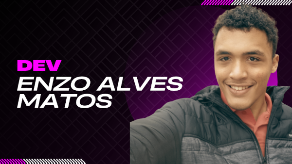

Quem sou eu
Meu nome é Enzo Alves Matos, sou formado em Técnico em ADS e, atualmente, curso Ciência da Computação. Estou apaixonado por desenvolver front-end e meu foco atual é aprimorar minhas habilidades para, no futuro, atuar profissionalmente na criação de sites.
O Que e o Site
Este site é o hub de todos os exercícios e desafios que desenvolvi durante meus estudos de programação. Aqui centralizarei projetos e práticas cotidianas, mantendo meu aprendizado totalmente organizado.
Como instalar
Para utilizar este projeto, é necessário usar um IDE, como o Visual Studio Code, ou o próprio Bloco de Notas. Também é necessário ter um navegador compatível com HTML5 e CSS3 para executar o projeto.